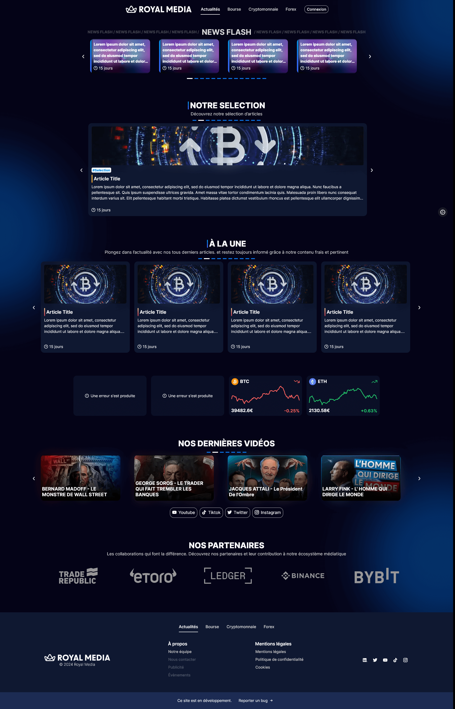
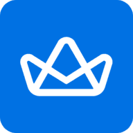
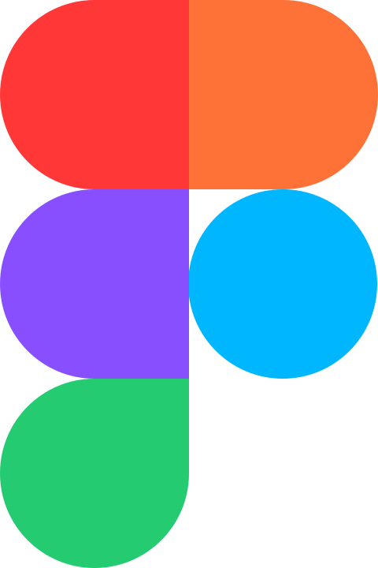
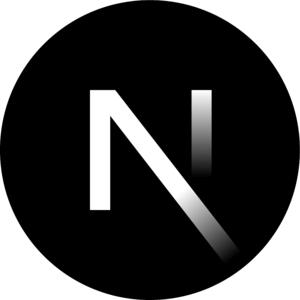
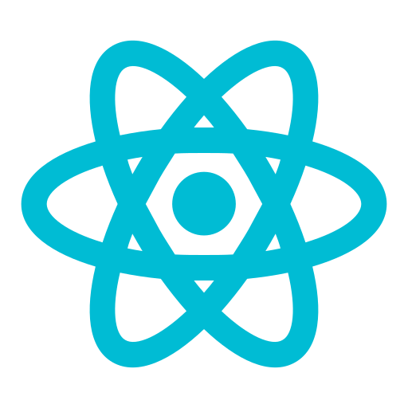
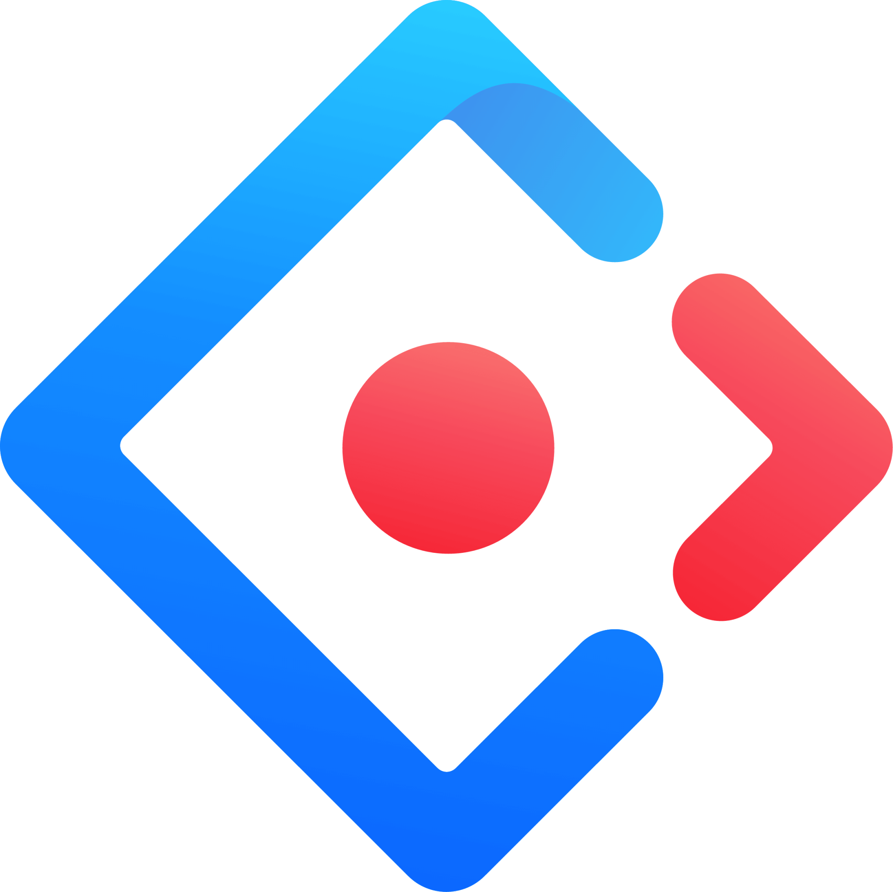
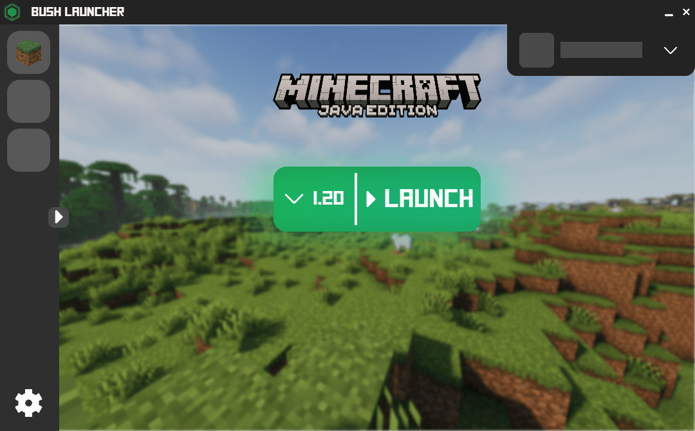
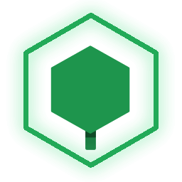
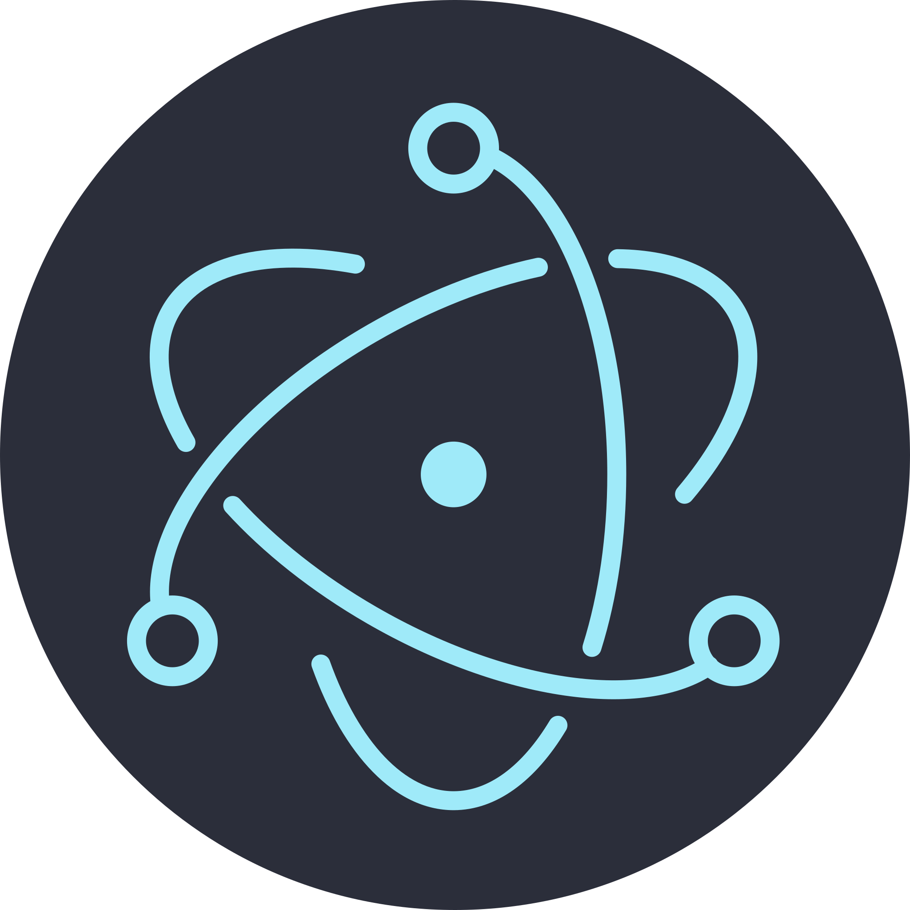

Je ne travail pas,
Je crée.
Développeur passionné depuis de nombreuses années, je fais principalement du web et j'aime mettre l'accent sur les détails.
Mon travail
Chacune de ces réalisations m'a permis de m'entrainer, d'acquérir du savoir et de l'expérience.
-

Royal media
Création de A à Z d'un site web pour un nouveau média spécialisé dans les cryptomonnaies. Voir plus
L'objectif était de créer un site web d'informations, le site devait contenir (entre autres),
- Un système d'articles avec des tags et des catégories,
- Des "flash news" en temps réel,
- Un système de compte et de connexion,
- Un panel de gestion pour une future équipe de rédaction
J'ai été le principal développeur sur ce projet, avec la précieuse aide de @Mathieu.
Mes missions :
- Retravailler et intégrer la maquette  Figma à l'aide du designer @Mathieu.
- Choisir les technologies et mettre en place le projet.
- Intégrer le frontend.
- Intégrer le backend, notamment une API REST.
- Optimiser le chargement, notamment avec l'implémentation du SSR, de chargements asynchrones et de squelettes placeholders.
- Mettre en place un système de comptes utilisateurs avec des permissions et un système de connexions externes (Discord, Google, TikTok).
- Concevoir et développer une console de gestion pour les administrateurs et une future équipe de rédaction.
Défis majeurs et apprentissages :
- C'est grâce à ce projet que j'ai pu découvrir les frameworks modernes (notamment

Next.js
), le SSR,
et
 NodeJs
.
NodeJs
.
- J'ai dû également me renseigner sur la gestion des Cookies, des outils d'analyses de trafics, et du RGPD.
- L'optimisation du site a été un processus particulièrement complexe pour moi, il a fallu réfléchir à la solution la plus appropriée pour chaque partie du site.
- C'est aussi avec ce projet que j'ai mis pour la première fois les mains dans le backend, découverte de la gestion de bases de données, des connexions et la structure REST.
La stack :
- Bundler : Next.js
- Backend :
NodeJs
,
MariaDB
- Frontend :  React ,  Ant design
- Autre :
 Github
,
Figma
,
Google Analytics
Github
,
Figma
,
Google Analytics
Le projet a finalement été arrêté, mais il constitue mon projet le plus abouti pour l'époque.
-

Bush Launcher
Ce projet de lanceur Minecraft avait pour but de grandement simplifier la gestion des mods et des extensions du jeu. Voir plus
Le BushLauncher était un logiciel de lancement (launcher) du jeu Minecraft, qui permettait notamment de lancer le jeu et de gérer ses différentes versions, d'installer des mods, des plugins, des datapacks etc.
Il possédait de nombreuses fonctionnalités de gestion automatique des fichiers permettant de faciliter la mise en place de configurations de jeu pour le singleplayer et le multiplayer privé et public.Fonctionnalités :
- Gestion de l'installation du jeu et de ses différentes versions,
- Gestion des prérequis et de Java,
- Système de connexion Microsoft et authentification des joueurs,
- Système de configurations personnalisables
- Prise en charge de tous les types d'addons (Mods, Plugin, Datapack, Shaderpack, etc) et de tous les loaders,
- Système d'export et de partage des configurations,
- Système de séquences de lancements configurables,
- Mode hors-ligne
J'ai été le seul développeur de ce projet, mais je me suis grandement aidé de ces quelques librairies.
Mes missions ont donc été de créer, de concevoir, et d'implémenter l'interface et tous les systèmes de l'application.
Défis majeurs et apprentissages :
- Découverte d'  Electron , de React et d' Ant design .
- Un des défis majeurs de ce projet a été le développement du système de téléchargement, il a fallu gérer les sources, la synchronisation des paquets de données, la validation des données, les mises à jour des addons, etc. J'ai beaucoup appris sur l'asynchrone, les fonctions internes et la gestion automatique de fichiers.
- Un autre défi a été la conception du moteur de lancement, en effet, il est
dessiné
comme une liste de tâches à effectuer pour lancer le jeu ("télécharge ceci", puis
"exécute cela"...), ces tâches varient en fonction de la "configuration" choisie.
Il a fallu gérer les permissions, l'ordre d'exécution, la gestion des erreurs, etc. - C'est également ma découverte de
 Typescript
et la mise en place de mes premières normes de développement.
Typescript
et la mise en place de mes premières normes de développement.
La stack :
- Bundler : Electron
- Backend : Electron , @XMCL , Axios
- Frontend : React , Ant design
- Autre :
Github
,
Figma
,
MSMC
- Projet basé sur le Electron React Boilerplate.
Finalement, ce projet n'a jamais été téléchargé par quiconque et est resté en beta... Si vous étiez prêt à télécharger une telle application, je vous redirige vers un projet équivalent Modrinth.
Me contacter
Paris, France